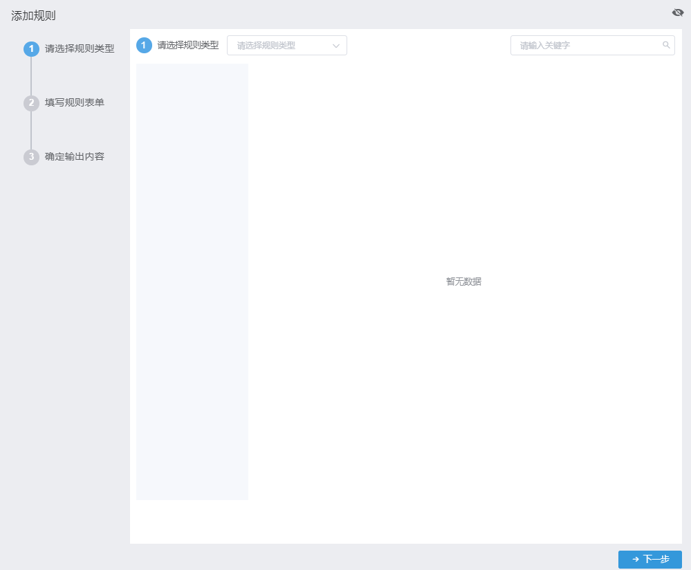
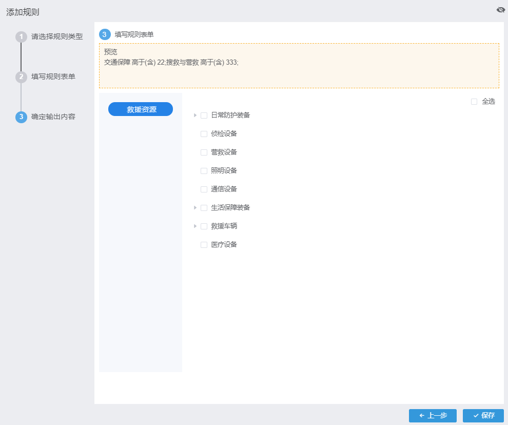

添加规则
| 1. | 在主菜单中选择“预案大脑→规则库”菜单，内容显示区显示“规则库”页面 |
| 2. | 单击〖添加规则〗按钮，弹出“添加规则”窗口，如Fig 9所示。 Fig 9 添加规则

|
| 3. | 在“选择规则类型”页签下选择规则类型。对应展示该规则类型的“规则输入来源”。 |
| 4. | 勾选一个或多个规则输入数据。 |
| 5. | 单击〖下一步〗按钮，进入“填写规则表单”页签。如Fig 10所示。 Fig 10 填写规则表单
|
| 6. | 填写规则表单内容。 |
| 7. | 单击〖下一步〗按钮，进入“确定输出内容”页签。如Fig 11所示。 Fig 11 确定输出内容

|
| 8. | 勾选一个或多个规则类型的“规则输出约束”对应的数据源数据。 |
| 9. | 确定输出内容无误后，单击〖保存〗按钮。 |
“选择规则类型”页签的“选择规则类型”下拉框中的选项来源于“预案大脑→支撑数据管理”中定义的规则类型。
规则输入来源数据以及规则输出来源数据对应于支撑数据管理中的数据源及其对应的数据源数据。